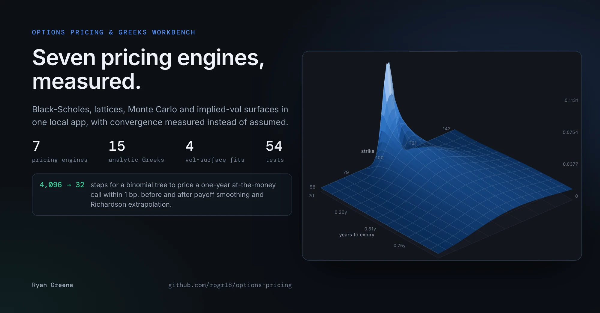
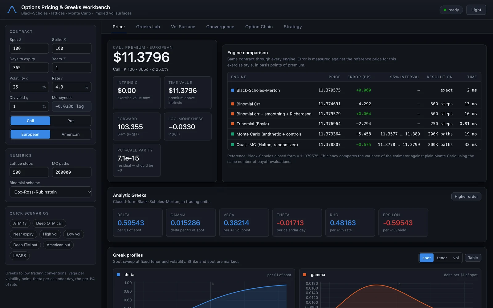
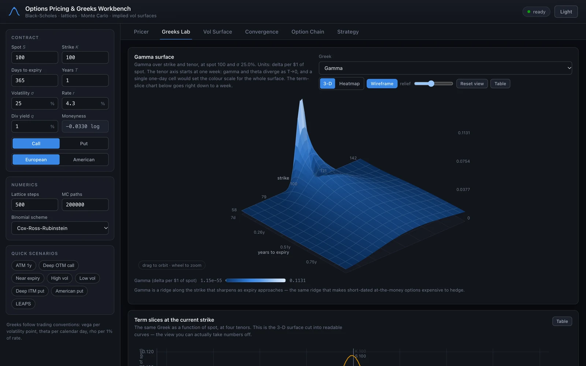
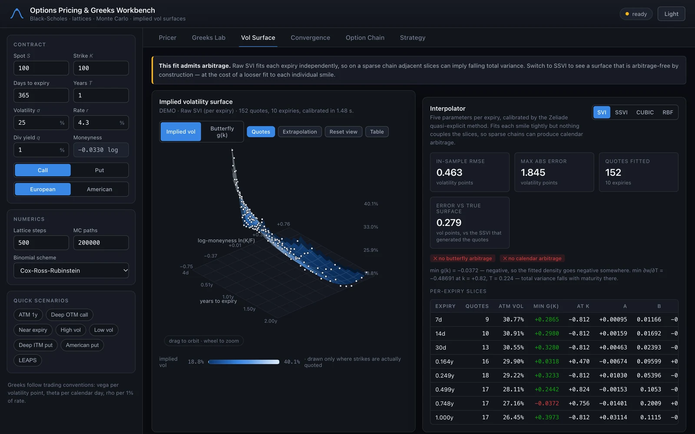
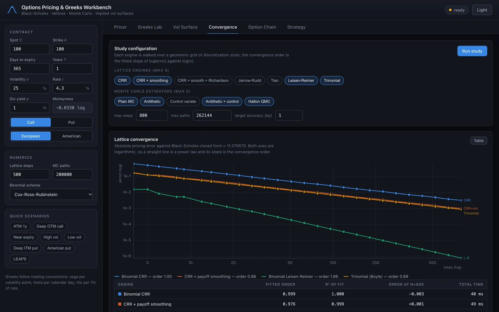
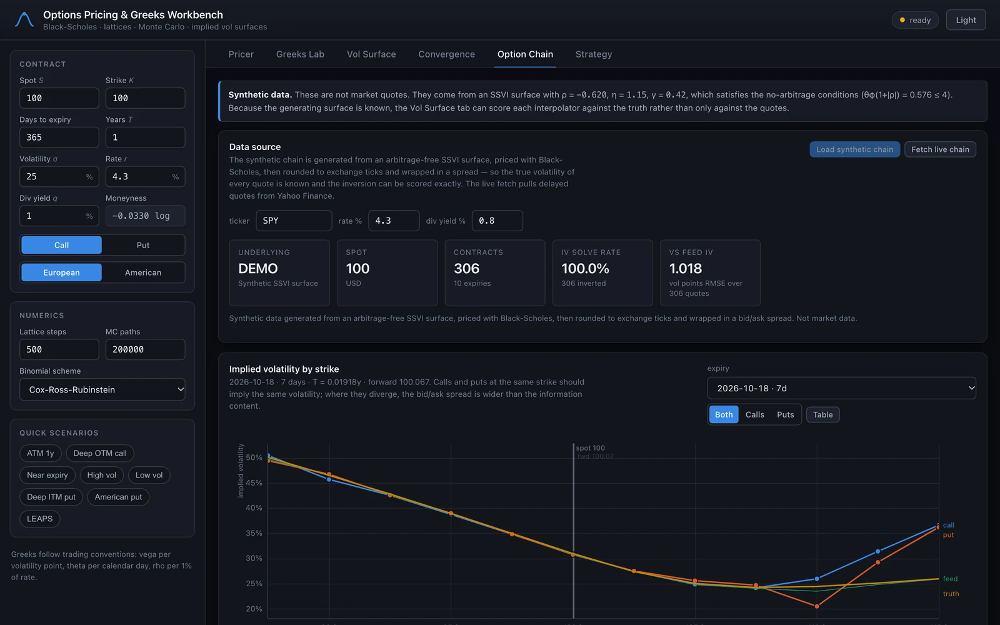
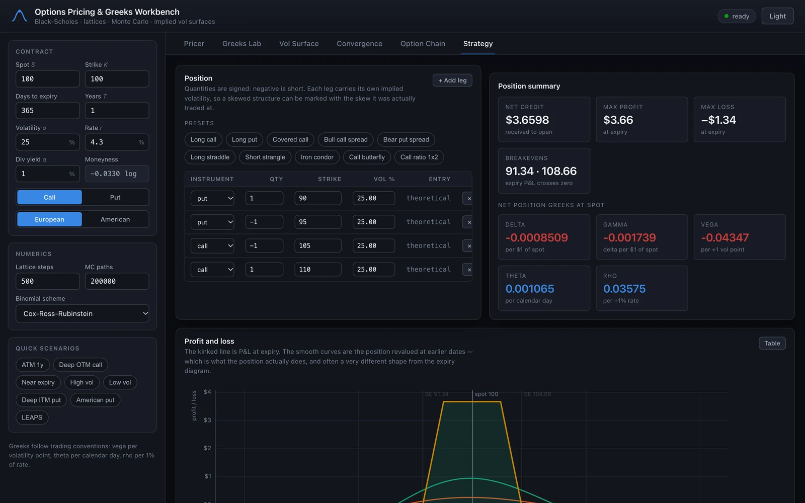

Options Pricing & Greeks Workbench
- Type
- Solo project
- Timeline
- Aug 2026
- Stack
- Python · NumPy · JavaScript · unittest
- Outcome
- Seven pricing engines compared on one screen, with convergence measured instead of assumed: a plain binomial tree needs 4,096 steps to reach 1 bp, a smoothed one needs 32.
Black-Scholes fits in twenty lines. The questions I wanted to answer come after it: when does each numerical method actually pay for itself, and what breaks when you fit a volatility surface to real quotes? The workbench puts seven pricing engines, all fifteen analytic Greeks, four surface fitters and a convergence lab in one local app. It runs on NumPy and Python’s standard library, with no build step; the 3-D surfaces are hand-drawn on a canvas, without WebGL.
Measuring convergence
Every engine prices the same contract while its step or path count grows, and the lab fits the observed convergence order and the wall-clock cost of reaching a target accuracy. For a one-year at-the-money call, a Cox-Ross-Rubinstein tree needs 4,096 steps to get within a basis point. The same tree with payoff smoothing and Richardson extrapolation needs 32, and Leisen-Reimer needs 33 with no refinements at all. Plain Monte Carlo doesn’t get there inside a million paths; randomized-Halton quasi-Monte Carlo does it in about 65,000.
Variance reduction is measured the same way, against plain Monte Carlo with the same number of payoff evaluations: antithetic sampling is 1.7× more efficient, a control variate 6.1×, both together 24.7×, and adding randomized-Halton QMC 5,410×.
From quotes to a volatility surface
Each quote in a chain is inverted from its bid/ask mid back to implied volatility with a guarded Newton solver; on the synthetic chain, 306 of 306 quotes invert. Four interpolators are then fitted to the same quotes and scored in-sample, on held-out strikes and against the known true surface, with butterfly and calendar arbitrage checks for each.
| Interpolator | In-sample | Held out | vs. truth | Arbitrage-free |
|---|---|---|---|---|
| Raw SVI | 0.46 | 0.61 | 0.28 | No |
| SSVI | 1.02 | 0.80 | 0.84 | Yes |
| Cubic spline | 0.01 | 1.01 | 0.55 | No |
| Thin-plate RBF | 0.12 | 0.86 | 0.50 | No |
RMSE in volatility points, 152 synthetic quotes across 10 expiries.
The cubic spline is a hundred times better than raw SVI in-sample and the worst of the four on held-out strikes. In-sample error isn’t a measure of quality, so the app always shows both.
How it’s tested
54 tests, mostly relationships rather than golden numbers: put-call parity, every analytic Greek against a finite difference of the price, independent engines against each other, and densities that must integrate to one. The American put at S = K = 100, T = 1, r = 5%, σ = 20% has to match the literature value of 6.0903.
Limits
Volatility is one input per contract; there’s no local- or stochastic-volatility model. American exercise assumes a continuous dividend yield, and the live chain fetch uses an undocumented endpoint, so it’s a demo rather than a data pipeline.
A tour of the app





